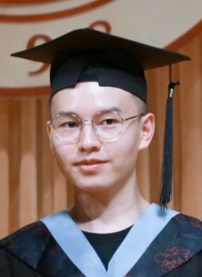

Dong An
Center for Research on Intelligent Perception and Computing (CRIPAC)
National Laboratory of Pattern Recognition (NLPR)
Institute of Automation, Chinese Academic of Sciences (CASIA)
No.95 Zhongguancun East Road, Haidian District, Beijing, China